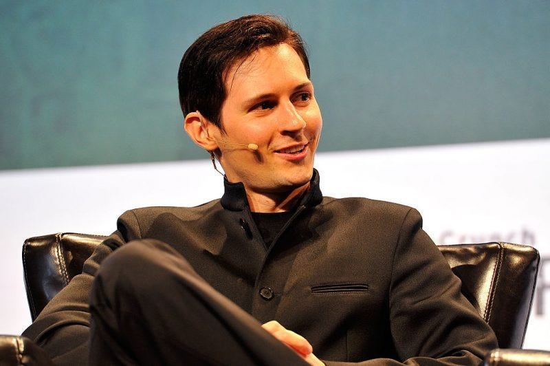

Neoliberismo: dell’establishment o di individualisti anarchici?

Ciao Giuseppe,
mi è piaciuto il tuo articolo! Hai riportato i fatti in modo veritiero ed equilibrato, ed hai avuto i coglioni di dire quello che non sento mai dire in Italia da quasi tutti quelli che dicono essere esperti di tecnologia e comunicazione. Sono sostanzialmente d’accordo con la tua analisi; ne accennai anch'io in un commento l’anno scorso:
e prima qui:
Solo il titolo del tuo articolo mi porta iniziale fraintendimento, perché riporta ad una contrapposizione geopolitica tra “Ovest” contro “Est”,
mentre la contrapposizione dei due modelli oggi è, come dici, tra neoliberismo dell’establishment e neoliberismo anarchico-individualista.
Ed in alternativa, dal “basso”, non c’è molto che vien su, purtroppo.
Venendo al pragmatico/tecnologico; ci sarebbe da approfondire (ti invito a farlo) a riguardo della psicologia di massa prevalente nell’utilizzatore di Facebook/WhatsApp e sdei ocial networks “gratuiti”.
Ora, tra i “detrattori” di whatsapp ci sono anch’io, insieme alla maggior parte dei nerd informatici, ca va sans dire, ma il fatto che Telegram sia “meglio “ è l’ultimo dei problemi!
Il problema è nella mancanza (in Italia) in una cultura su modelli collaborativi a cui solo accenni in fondo al tuo articolo. Io nel mio piccolo faccio per esempi questa “lotta”:
Grazie ancora per il tuo articolo.
Ti invito a seguire/scrivere sul blog della comunità italiana chatbots: www.convcomp2016.it
Originally published on Medium.